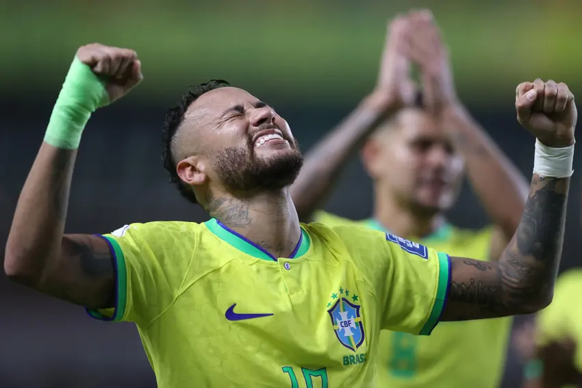

A contagem regressiva para a Copa do Mundo de 2026 entrou na reta final. Na última segunda-feira (11), o
técnico Carlo Ancelotti enviou à FIFA a pré-lista de 55 nome que servem como base para a convocação
definitiva, marcada para a próxima segunda, dia 18 de maio.
De acordo com o ge, a lista conta com nomes de peso que, por diferentes motivos, ainda não atuaram sob o
comando do técnico italiano, mas seguem no radar para o Mundial. Embora o documento oficial seja mantido em
sigilo pela CBF, a apuração detalha as figuras que compõem essa relação.

Os nomes que mais chamam a atenção entre os "não testados" por Ancelotti são os veteranos: Neymar (Santos) e
Thiago Silva (Porto). O camisa 10 não atua pela Seleção Brasileira desde a grave lesão em 2023 e, embora
Ancelotti tenha assumido o cargo em maio de 2025, ainda não teve a oportunidade de convocar o craque. Já o
zagueiro Thiago Silva surge como uma possível solução de liderança para o grupo, voltando ao radar após um
longo período de ausência.